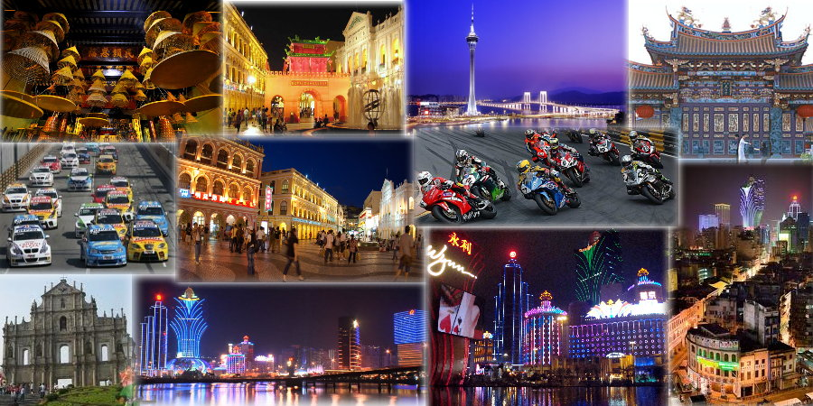

|
|
||
|
Driving Best Omnichannel CX Through Data Strategy & Data Intelligence
|
||
|
Timeline:
The Origin •
The Journey
|
||
|
Dr. U (or Kevin) was born in a very small region called Macau, then he spent his first 17.83 years in Macau, until graduated from high school in year 2002. Macau (traditional Chinese: 澳門; simplified Chinese: 澳门), also spelled Macao (/məˈkaʊ/), is along with Hong Kong, one of the two special administrative regions of the People's Republic of China. It lies on the western side of the Pearl River Delta, bordering Guangdong province to the north and facing the South China Sea to the east and south. It's also called the East Las Vegas, whose gambling revenue was seven times of Las Vegas in year 2014. Below are some views of Macau, see how amazing it is? If you want to know more about Macau, please refer to here.

People always say college is a fresh new start of our life, a place that you make new friends who love you as you are, and find your niche. Attending college in another city did open Dr. U's eyes to the world, his journey to explore the unknown world also started from here. Some milestones are listed as following.
2002 - Moved to Shanghai for College
2005 - Worked at Webasto AG. in Munich, Germany for Software Development
2006 - Graduated from College & Returned to Macau for Professional Career
2007 - First Promotion
2008 - Promotion Again & Moved to USA for Ph.D.
2009 - Shifted Research Focus to Machine Learning & Received Upgraded Scholarship
2012 - Worked at IBM T.J. Watson Research Center in NY
2013 - Became Dr. U & Joined Think Big Analytics in Silicon Valley to work on Big Data problems
2014 - Joined Las Vegas Sands Corp. to build Data Science team by giving up iBank opportunity
2015 - Promoted To Global Director Of Data Science With Greater Impact To International Markets
2017 - Promised Ex-boss To Help Building The Data Science Practice And Digital Transformation Roadmap At Carnival
2018 - An Opportunity From One Of The Biggest Online Commerce Companies - Alibaba
2019 - Be Part of the Transformation Journey in Finance Industry
|
||
|
|
||
|
Copyright © 2018. All rights reserved.
ManChon (Kevin) U, PhD - Driving Best Omnichannel CX Through Data Strategy & Data Intelligence |
||